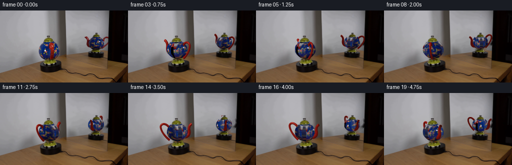
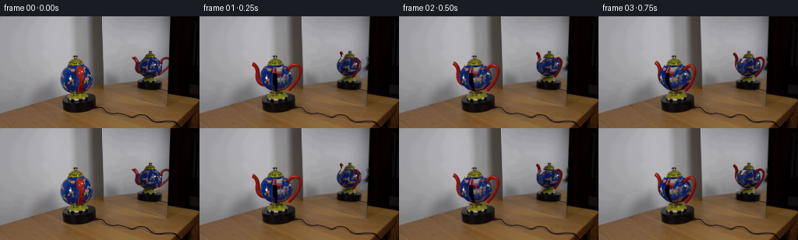
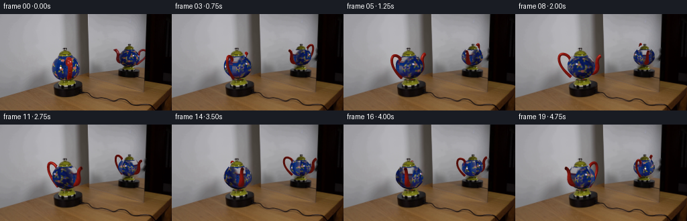
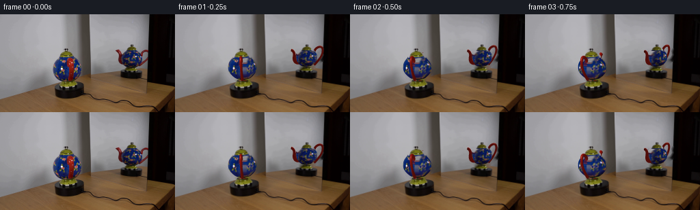
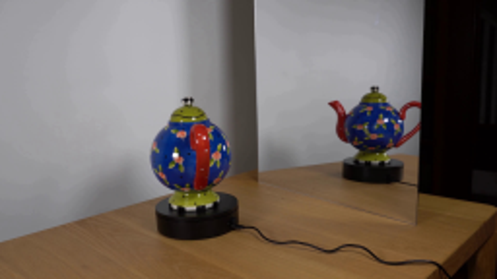
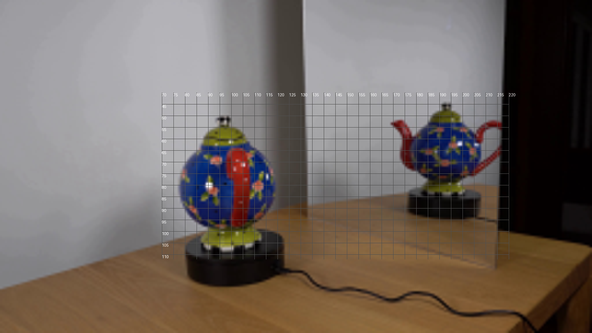
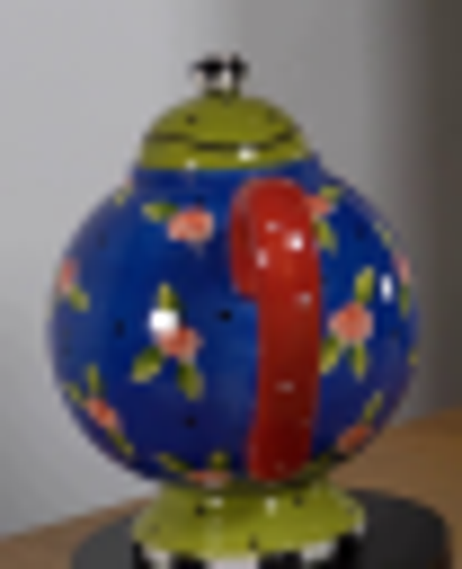
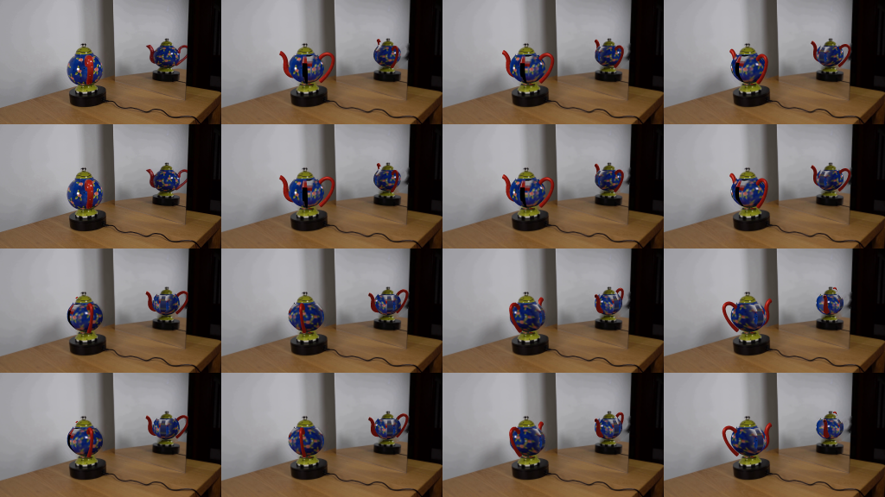

CODING AGENTS AS PIXEL WORLD MODELS
traex/GPT-6.1-Sol · 0123
点击播放 · 原生 RGB 像素
此结果可播放，但该运行尚未通过最终提交审核。页面展示不代表评测通过。
逐轮保存的候选
回放视频、检查图与代码变化。
每份候选均可单独播放。实际图片检查记录在下方工具轨迹中。
候选 01播放与检查图
点击播放 · 原生 RGB 像素


展开代码变化
--- 上一保存版本
+++ 本次保存版本
@@ -0,0 +1,242 @@
+from pathlib import Path
+import numpy as np
+import cv2
+from PIL import Image, ImageDraw
+from scipy.interpolate import PchipInterpolator, CubicSpline
+from scipy.ndimage import gaussian_filter
+import artifact_io
+
+ROOT=Path(__file__).resolve().parent
+S=4
+H,W=144*S,256*S
+original=np.array(Image.open(ROOT/'first_frame.png').convert('RGB'))
+src=original.astype(float)
+# The ceramic vessel is represented by a measured surface of revolution.
+heights=np.array([8,9,10,12,15,18,22,26,30,34,38,41,43.6])
+radii=np.array([3.5,7,9.8,12.8,16.0,18.4,20.3,20.65,20.25,18.8,16.0,13.65,11.75])
+profile=PchipInterpolator(heights,radii,extrapolate=False)
+DELTA=np.deg2rad(75)
+views=[dict(cx=99.5,cy=104.3,s=1.,e=.145,lean=-.045,mirror=False,top=62.,bot=99.),
+ dict(cx=191.7,cy=83.1,s=.77,e=.22,lean=.02,mirror=True,top=52.7,bot=80.)]
+
+def polygon_mask(points):
+ im=Image.new('L',(256,144));ImageDraw.Draw(im).polygon(points,fill=255)
+ return np.array(im)
+
+# Remove just the moving ceramic surfaces. The wall, turntable and cable are fixed.
+real_mask=polygon_mask([(85,62),(110,62),(114,67),(118,73),(120,79),(119,86),(115,92),(109,97),(104,99),(91,99),(85,94),(79,88),(76,80),(78,71),(82,66)])
+mir_mask=polygon_mask([(182,53),(201,52),(207,57),(210,63),(209,70),(204,76),(198,80),(187,81),(179,76),(174,67),(175,58)])
+mir_mask=np.maximum(mir_mask,polygon_mask([(167,52),(173,51),(178,57),(180,64),(182,73),(175,74),(172,69),(173,60)]))
+mir_mask=np.maximum(mir_mask,polygon_mask([(204,56),(210,51),(218,51),(217,59),(217,64),(211,71),(204,77),(201,76),(207,68),(214,60),(213,54),(208,55),(207,60)]))
+remove=np.maximum(real_mask,mir_mask)
+remove=cv2.dilate(remove,np.ones((3,3),np.uint8))
+# The mirror ends at its vertical edge, so inpainting must not sample the dark cabinet.
+fill=original.copy()
+fill[:,218:]=fill[:,217:218]
+bg=cv2.inpaint(fill,remove,4,cv2.INPAINT_TELEA)
+bg[:,218:]=original[:,218:]
+# The rotationally symmetric lid, finial and foot do not change their outline.
+static=np.zeros((144,256),np.uint8)
+static=np.maximum(static,polygon_mask([(93,50),(98,49),(100,51),(99,54),(103,55),(107,57),(110,61),(110,63),(85,63),(86,59),(90,56),(95,54)]))
+static=np.maximum(static,polygon_mask([(91,97),(106,97),(108,100),(112,102),(112,105),(108,108),(88,108),(86,105),(87,101)]))
+static=np.maximum(static,polygon_mask([(189,44),(195,43),(195,46),(198,47),(201,51),(201,53),(182,53),(183,49),(188,46)]))
+static=np.maximum(static,polygon_mask([(187,78),(198,78),(201,80),(203,82),(201,85),(184,85),(182,82),(184,80)]))
+bg[static>0]=original[static>0]
+bghi=cv2.resize(bg,(W,H),interpolation=cv2.INTER_CUBIC).astype(float)
+static_hi=cv2.resize(static,(W,H),interpolation=cv2.INTER_NEAREST)>0
+
+# Capture a periodic albedo map from the two views of the object in the given frame.
+# Each observed pixel is unprojected onto the vessel and shared by both views.
+nh,na=240,720
+hh=np.linspace(8,43.6,nh)[:,None]
+aa=np.linspace(0,2*np.pi,na,endpoint=False)[None,:]
+rr=profile(hh)
+weights=[];samples=[]
+for vi,v in enumerate(views):
+ angle=aa if not v['mirror'] else DELTA-aa
+ zz=rr*np.sin(angle)
+ xx=v['cx']+v['s']*(rr*np.cos(angle)+v['lean']*hh)
+ yy=v['cy']-v['s']*hh*np.cos(v['e'])+v['s']*zz*np.sin(v['e'])
+ xx=np.broadcast_to(xx,(nh,na)).astype(np.float32);yy=np.broadcast_to(yy,(nh,na)).astype(np.float32)
+ color=cv2.remap(src.astype(np.float32),xx,yy,cv2.INTER_CUBIC,borderMode=cv2.BORDER_REFLECT).astype(float)
+ wt=np.broadcast_to(np.maximum(np.sin(angle),0)**2.5,(nh,na)).copy()
+ if vi==0:
+ occlude=(xx>98.3)&(xx<109)&(yy>63)&(yy<98.5)
+ wt[occlude]=0
+ else:
+ wt[(xx<178.2)&(yy<74)]=0
+ wt*=.95
+ # Reject background just above/below the blue glaze.
+ wt[(yy<v['top']+.2)|(yy>v['bot']-.2)]=0
+ weights.append(wt);samples.append(color)
+ws=weights[0]+weights[1]
+atlas=(samples[0]*weights[0][...,None]+samples[1]*weights[1][...,None])/(ws[...,None]+1e-8)
+# Fill unobserved back side with an observed section of the same floral glaze.
+for i in range(na):
+ bad=ws[:,i]<.015
+ if bad.any():
+ # A diametrically opposite patch supplies unseen details without new objects.
+ j=(i+na//2)%na
+ alt=atlas[:,j].copy()
+ absent=ws[:,j]<.015
+ if absent.any():
+ indices=np.flatnonzero(ws.mean(axis=0)>.22)
+ j2=indices[np.argmin(np.abs(((indices-i+na//2)%na)-na//2))]
+ alt[absent]=atlas[absent,j2]
+ atlas[bad,i]=alt[bad]
+# Allow the rim bands from the photographs to remain softly defined.
+atlas=np.clip(atlas,0,255).astype(np.float32)
+atlas_pad=np.concatenate([atlas,atlas[:,:1]],axis=1)
+
+Y,X=np.mgrid[0:H,0:W].astype(float)
+X=(X+.5)/S;Y=(Y+.5)/S
+
+def vessel_surface(v):
+ # Invert the orthographic projection of the front lathed surface.
+ p=(v['cy']-Y)/(v['s']*np.cos(v['e']))
+ x=(X-v['cx'])/v['s']-v['lean']*p
+ for _ in range(12):
+ r=np.nan_to_num(profile(np.clip(p,8,43.6)))
+ z=np.sqrt(np.maximum(r*r-x*x,0))
+ p=(v['cy']-Y+v['s']*z*np.sin(v['e']))/(v['s']*np.cos(v['e']))
+ x=(X-v['cx'])/v['s']-v['lean']*p
+ r=np.nan_to_num(profile(np.clip(p,8,43.6)))
+ z=np.sqrt(np.maximum(r*r-x*x,0))
+ valid=(p>=8)&(p<=43.6)&(np.abs(x)<=r)&(Y>=v['top'])&(Y<=v['bot'])
+ angle=np.arctan2(z,x)
+ baseangle=angle if not v['mirror'] else DELTA-angle
+ depth=v['s']*(z*np.cos(v['e'])+p*np.sin(v['e']))
+ return p,x,z,valid,baseangle,depth
+surfaces=[vessel_surface(v) for v in views]
+
+# Tube meshes: a ceramic loop handle and a tapered, curved hollow spout.
+def make_tube(points, radii, n=84,k=16,cap=False):
+ pts=np.array(points,float)
+ t=np.linspace(0,1,len(pts));tt=np.linspace(0,1,n)
+ curve=CubicSpline(t,pts,axis=0)
+ centers=curve(tt); tangents=curve(tt,1)
+ tangents/=np.linalg.norm(tangents,axis=1)[:,None]
+ # Curve lies in XY; a fixed binormal gives a stable circular tube.
+ b=np.tile([0.,0.,1.],(n,1))
+ q=np.cross(b,tangents);q/=np.linalg.norm(q,axis=1)[:,None]
+ phi=np.linspace(0,2*np.pi,k,endpoint=False)
+ normals=q[:,None,:]*np.cos(phi)[None,:,None]+b[:,None,:]*np.sin(phi)[None,:,None]
+ rad=np.interp(tt,t,np.array(radii,float))
+ verts=centers[:,None,:]+rad[:,None,None]*normals
+ uv=np.broadcast_to(tt[:,None],(n,k)).reshape(-1)
+ faces=[]
+ for i in range(n-1):
+ for j in range(k):
+ a=i*k+j;b1=i*k+(j+1)%k;c=(i+1)*k+j;d=(i+1)*k+(j+1)%k
+ faces.extend([(a,c,b1),(b1,c,d)])
+ return verts.reshape(-1,3),normals.reshape(-1,3),np.array(faces),uv,centers,tangents,rad
+
+handle=make_tube([(15.8,35,0),(19,40,0),(25.5,43,0),(31,41,0),(32.4,35,0),(28,24,0),(15.8,10.5,0)], [2.1,2.15,2.05,2.,1.9,1.8,2.3],n=84,k=18)
+# Negative X is the spout, exactly opposite the handle.
+spout=make_tube([(-14,18,0),(-21,20,0),(-24,26,0),(-24,33,0),(-26,39,0),(-30.1,42.4,0)], [4.6,4.1,3.2,2.6,2.4,2.55],n=70,k=20)
+
+
+def project(vert,v,angle):
+ c,s=np.cos(angle),np.sin(angle)
+ x=vert[:,0]*c-vert[:,2]*s
+ z=vert[:,0]*s+vert[:,2]*c
+ if v['mirror']:
+ x,z=np.cos(DELTA)*x+np.sin(DELTA)*z,np.sin(DELTA)*x-np.cos(DELTA)*z
+ p=vert[:,1]
+ return np.stack(((v['cx']+v['s']*(x+v['lean']*p))*S,
+ (v['cy']-v['s']*p*np.cos(v['e'])+v['s']*z*np.sin(v['e']))*S,
+ v['s']*(z*np.cos(v['e'])+p*np.sin(v['e']))),axis=1)
+
+light=np.array([-.45,.68,.58]);light/=np.linalg.norm(light)
+eye=np.array([0,np.sin(.145),np.cos(.145)])
+
+def tube_color(norm,verts,uv,kind,angle,v):
+ c,s=np.cos(angle),np.sin(angle)
+ nn=norm.copy();nn[:,0]=norm[:,0]*c-norm[:,2]*s;nn[:,2]=norm[:,0]*s+norm[:,2]*c
+ # Real lighting is shared by the direct and reflected views.
+ if v['mirror']:
+ ev=np.array([np.sin(DELTA)*np.cos(v['e']),np.sin(v['e']),-np.cos(DELTA)*np.cos(v['e'])])
+ else:ev=eye
+ dif=np.maximum(nn@light,0)
+ half=light+ev;half/=np.linalg.norm(half)
+ spec=np.maximum(nn@half,0)**40
+ base=np.array([150.,25.,17.])
+ h=verts[:,1]
+ paint=.96+.04*np.sin(uv*29+verts[:,2]*2)
+ shade=.57+.50*dif
+ colors=base[None,:]*shade[:,None]*paint[:,None]
+ colors+=spec[:,None]*np.array([92.,85.,73.])
+ # Fine warm-colored marks in the original red enamel.
+ mark=(np.sin(uv*67+verts[:,2]*1.5)>.985)&(norm[:,2]>.45)&(h<35)
+ colors[mark]=colors[mark]*.74+np.array([155,102,33])*.26
+ return np.clip(colors,0,255)
+
+def raster_mesh(canvas,zbuf,vertices,faces,colors,clip_mirror=False):
+ for f in faces:
+ pts=vertices[f];co=colors[f]
+ lo=np.floor(pts[:,:2].min(axis=0)).astype(int);hi=np.ceil(pts[:,:2].max(axis=0)).astype(int)
+ x0=max(0,lo[0]);x1=min(W-1,hi[0]);y0=max(0,lo[1]);y1=min(H-1,hi[1])
+ if clip_mirror:x1=min(x1,int(217.3*S))
+ if x1<x0 or y1<y0:continue
+ ax,ay=pts[0,:2];bx,by=pts[1,:2];cx,cy=pts[2,:2]
+ den=(by-cy)*(ax-cx)+(cx-bx)*(ay-cy)
+ if abs(den)<1e-7:continue
+ yy,xx=np.mgrid[y0:y1+1,x0:x1+1];xx=xx+.5;yy=yy+.5
+ w0=((by-cy)*(xx-cx)+(cx-bx)*(yy-cy))/den
+ w1=((cy-ay)*(xx-cx)+(ax-cx)*(yy-cy))/den
+ w2=1-w0-w1
+ zz=w0*pts[0,2]+w1*pts[1,2]+w2*pts[2,2]
+ subz=zbuf[y0:y1+1,x0:x1+1]
+ ok=(w0>=-1e-5)&(w1>=-1e-5)&(w2>=-1e-5)&(zz>subz)
+ if not ok.any():continue
+ rgb=w0[...,None]*co[0]+w1[...,None]*co[1]+w2[...,None]*co[2]
+ canvas[y0:y1+1,x0:x1+1][ok]=rgb[ok]
+ subz[ok]=zz[ok]
+
+def draw_spout_mouth(canvas,zbuf,v,angle):
+ # Rim and dark interior at the open end, not a solid rod.
+ _,_,_,_,ctr,tan,rad=spout
+ cen=ctr[-1];t=tan[-1];b=np.array([0.,0.,1.]);q=np.cross(b,t)
+ verts=[cen-t*.45]
+ colors=[[35.,14.,10.]]
+ for ph in np.linspace(0,2*np.pi,32,endpoint=False):
+ verts.append(cen-t*.4+rad[-1]*.73*(q*np.cos(ph)+b*np.sin(ph)))
+ colors.append([43.,15.,10.])
+ faces=np.array([[0,j+1,(j+1)%32+1] for j in range(32)])
+ raster_mesh(canvas,zbuf,project(np.array(verts),v,angle),faces,np.array(colors),v['mirror'])
+
+def render(angle):
+ canvas=bghi.copy();zbuf=np.full((H,W),-1e8,float)
+ # Original fixed symmetric parts have actual photographic shading.
+ for vi,v in enumerate(views):
+ p,x,z,valid,a0,depth=surfaces[vi]
+ a=(a0-angle)%(2*np.pi)
+ mapx=(a/(2*np.pi)*na).astype(np.float32)
+ mapy=((p-8)/35.6*(nh-1)).astype(np.float32)
+ rgb=cv2.remap(atlas_pad,mapx,mapy,cv2.INTER_CUBIC,borderMode=cv2.BORDER_REPLICATE).astype(float)
+ canvas[valid]=rgb[valid]
+ zbuf[valid]=depth[valid]
+ stat=static_hi&(np.abs(X-v['cx'])<20*v['s'])
+ # Front surfaces of finial, lid and pedestal act as proper occluders.
+ py=(v['cy']-Y)/(v['s']*np.cos(v['e']))
+ sd=v['s']*(7*np.cos(v['e'])+py*np.sin(v['e']))
+ zbuf[stat]=sd[stat]
+ canvas[stat]=bghi[stat]
+ for mesh,kind in [(handle,'handle'),(spout,'spout')]:
+ vert,norm,faces,uv,*_=mesh
+ rgb=tube_color(norm,vert,uv,kind,angle,v)
+ pp=project(vert,v,angle)
+ raster_mesh(canvas,zbuf,pp,faces,rgb,v['mirror'])
+ draw_spout_mouth(canvas,zbuf,v,angle)
+ out=cv2.resize(np.clip(canvas,0,255).astype(np.float32),(256,144),interpolation=cv2.INTER_AREA)
+ return np.clip(out,0,255).astype(np.uint8)
+
+if __name__=='__main__':
+ frames=[original.copy()]
+ for i in range(1,20):
+ angle=np.deg2rad(50)*(i/4)
+ im=render(angle)
+ frames.append(im)
+ Image.fromarray(im).save(ROOT/'.tmp'/f'candidate_{i:02}.png')
+ print(f'frame {i}',flush=True)
+ artifact_io.save(np.stack(frames),ROOT)
候选 02播放与检查图
点击播放 · 原生 RGB 像素


展开代码变化
--- 上一保存版本
+++ 本次保存版本
@@ -16,6 +16,7 @@
radii=np.array([3.5,7,9.8,12.8,16.0,18.4,20.3,20.65,20.25,18.8,16.0,13.65,11.75])
profile=PchipInterpolator(heights,radii,extrapolate=False)
DELTA=np.deg2rad(75)
+THETA0=np.deg2rad(80)
views=[dict(cx=99.5,cy=104.3,s=1.,e=.145,lean=-.045,mirror=False,top=62.,bot=99.),
dict(cx=191.7,cy=83.1,s=.77,e=.22,lean=.02,mirror=True,top=52.7,bot=80.)]
@@ -68,22 +69,28 @@
wt*=.95
# Reject background just above/below the blue glaze.
wt[(yy<v['top']+.2)|(yy>v['bot']-.2)]=0
+ red=(color[...,0]>color[...,2]*1.2)&(color[...,0]>color[...,1]*1.7)
+ wt[red]=0
weights.append(wt);samples.append(color)
ws=weights[0]+weights[1]
atlas=(samples[0]*weights[0][...,None]+samples[1]*weights[1][...,None])/(ws[...,None]+1e-8)
# Fill unobserved back side with an observed section of the same floral glaze.
-for i in range(na):
- bad=ws[:,i]<.015
- if bad.any():
- # A diametrically opposite patch supplies unseen details without new objects.
+for row in range(nh):
+ good=np.flatnonzero(ws[row]>.025)
+ if len(good)<2:
+ other=np.argmin(np.abs(np.flatnonzero((ws>.025).sum(axis=1)>30)-row))
+ rr2=np.flatnonzero((ws>.025).sum(axis=1)>30)[other]
+ atlas[row]=atlas[rr2]
+ good=np.flatnonzero(ws[rr2]>.025)
+ for i in np.flatnonzero(ws[row]<=.025):
j=(i+na//2)%na
- alt=atlas[:,j].copy()
- absent=ws[:,j]<.015
- if absent.any():
- indices=np.flatnonzero(ws.mean(axis=0)>.22)
- j2=indices[np.argmin(np.abs(((indices-i+na//2)%na)-na//2))]
- alt[absent]=atlas[absent,j2]
- atlas[bad,i]=alt[bad]
+ if ws[row,j]>.07:
+ atlas[row,i]=atlas[row,j]
+ else:
+ ds=np.abs((good-i+na//2)%na-na//2)
+ js=good[np.argmin(ds)]
+ atlas[row,i]=atlas[row,js]
+atlas=gaussian_filter(atlas,(.35,.5,0),mode=('nearest','wrap','nearest'))
# Allow the rim bands from the photographs to remain softly defined.
atlas=np.clip(atlas,0,255).astype(np.float32)
atlas_pad=np.concatenate([atlas,atlas[:,:1]],axis=1)
@@ -131,7 +138,7 @@
faces.extend([(a,c,b1),(b1,c,d)])
return verts.reshape(-1,3),normals.reshape(-1,3),np.array(faces),uv,centers,tangents,rad
-handle=make_tube([(15.8,35,0),(19,40,0),(25.5,43,0),(31,41,0),(32.4,35,0),(28,24,0),(15.8,10.5,0)], [2.1,2.15,2.05,2.,1.9,1.8,2.3],n=84,k=18)
+handle=make_tube([(15.8,35,0),(19,42,0),(25.5,45,0),(31,43,0),(32.4,35,0),(28,24,0),(15.8,10.5,0)], [2.1,2.15,2.05,2.,1.9,1.8,2.3],n=84,k=18)
# Negative X is the spout, exactly opposite the handle.
spout=make_tube([(-14,18,0),(-21,20,0),(-24,26,0),(-24,33,0),(-26,39,0),(-30.1,42.4,0)], [4.6,4.1,3.2,2.6,2.4,2.55],n=70,k=20)
@@ -224,10 +231,10 @@
canvas[stat]=bghi[stat]
for mesh,kind in [(handle,'handle'),(spout,'spout')]:
vert,norm,faces,uv,*_=mesh
- rgb=tube_color(norm,vert,uv,kind,angle,v)
- pp=project(vert,v,angle)
+ rgb=tube_color(norm,vert,uv,kind,angle+THETA0,v)
+ pp=project(vert,v,angle+THETA0)
raster_mesh(canvas,zbuf,pp,faces,rgb,v['mirror'])
- draw_spout_mouth(canvas,zbuf,v,angle)
+ draw_spout_mouth(canvas,zbuf,v,angle+THETA0)
out=cv2.resize(np.clip(canvas,0,255).astype(np.float32),(256,144),interpolation=cv2.INTER_AREA)
return np.clip(out,0,255).astype(np.uint8)
可观测工具轨迹
实际执行的命令与返回图片。
命令 1exit 0
/bin/bash -lc "ls -la && cat prompt.txt && printf '\\n--- RULES ---\\n' && cat GENERATION_RULES.md"
命令 2exit 0
/bin/bash -lc "cat artifact_io.py && python - <<'PY'
from PIL import Image
im=Image.open('first_frame.png');im.resize((1024,576)).save('.tmp/large.png')
PY"命令 3exit 0
/bin/bash -lc "python - <<'PY'
from PIL import Image, ImageDraw
im=Image.open('first_frame.png').resize((1536,864))
d=ImageDraw.Draw(im)
for x in range(70,221,5):
d.line((x*6,40*6,x*6,112*6), fill=(80,80,80),width=1);d.text((x*6,40*6),str(x),fill='white')
for y in range(45,111,5):
d.line((70*6,y*6,220*6,y*6),fill=(80,80,80),width=1);d.text((70*6,y*6),str(y),fill='white')
im.save('.tmp/grid.png')
PY"命令 4exit 0
/bin/bash -lc "python - <<'PY' import importlib.util for m in ['numpy','scipy','PIL','cv2']: print(m, bool(importlib.util.find_spec(m))) PY"
命令 5exit 0
/bin/bash -lc "python - <<'PY'
from PIL import Image
im=Image.open('first_frame.png');im.crop((72,44,124,108)).resize((520,640)).save('.tmp/crop.png')
PY"命令 6exit 0
/bin/bash -lc "cat > generate.py <<'PY'
from pathlib import Path
import numpy as np
import cv2
from PIL import Image, ImageDraw
from scipy.interpolate import PchipInterpolator, CubicSpline
from scipy.ndimage import gaussian_filter
import artifact_io
ROOT=Path(__file__).resolve().parent
S=4
H,W=144*S,256*S
original=np.array(Image.open(ROOT/'first_frame.png').convert('RGB'))
src=original.astype(float)
# The ceramic vessel is represented by a measured surface of revolution.
heights=np.array([8,9,10,12,15,18,22,26,30,34,38,41,43.6])
radii=np.array([3.5,7,9.8,12.8,16.0,18.4,20.3,20.65,20.25,18.8,16.0,13.65,11.75])
profile=PchipInterpolator(heights,radii,extrapolate=False)
DELTA=np.deg2rad(75)
views=[dict(cx=99.5,cy=104.3,s=1.,e=.145,lean=-.045,mirror=False,top=62.,bot=99.),
dict(cx=191.7,cy=83.1,s=.77,e=.22,lean=.02,mirror=True,top=52.7,bot=80.)]
def polygon_mask(points):
im=Image.new('L',(256,144));ImageDraw.Draw(im).polygon(points,fill=255)
return np.array(im)
# Remove just the moving ceramic surfaces. The wall, turntable and cable are fixed.
real_mask=polygon_mask([(85,62),(110,62),(114,67),(118,73),(120,79),(119,86),(115,92),(109,97),(104,99),(91,99),(85,94),(79,88),(76,80),(78,71),(82,66)])
mir_mask=polygon_mask([(182,53),(201,52),(207,57),(210,63),(209,70),(204,76),(198,80),(187,81),(179,76),(174,67),(175,58)])
mir_mask=np.maximum(mir_mask,polygon_mask([(167,52),(173,51),(178,57),(180,64),(182,73),(175,74),(172,69),(173,60)]))
mir_mask=np.maximum(mir_mask,polygon_mask([(204,56),(210,51),(218,51),(217,59),(217,64),(211,71),(204,77),(201,76),(207,68),(214,60),(213,54),(208,55),(207,60)]))
remove=np.maximum(real_mask,mir_mask)
remove=cv2.dilate(remove,np.ones((3,3),np.uint8))
# The mirror ends at its vertical edge, so inpainting must not sample the dark cabinet.
fill=original.copy()
fill[:,218:]=fill[:,217:218]
bg=cv2.inpaint(fill,remove,4,cv2.INPAINT_TELEA)
bg[:,218:]=original[:,218:]
# The rotationally symmetric lid, finial and foot do not change their outline.
static=np.zeros((144,256),np.uint8)
static=np.maximum(static,polygon_mask([(93,50),(98,49),(100,51),(99,54),(103,55),(107,57),(110,61),(110,63),(85,63),(86,59),(90,56),(95,54)]))
static=np.maximum(static,polygon_mask([(91,97),(106,97),(108,100),(112,102),(112,105),(108,108),(88,108),(86,105),(87,101)]))
static=np.maximum(static,polygon_mask([(189,44),(195,43),(195,46),(198,47),(201,51),(201,53),(182,53),(183,49),(188,46)]))
static=np.maximum(static,polygon_mask([(187,78),(198,78),(201,80),(203,82),(201,85),(184,85),(182,82),(184,80)]))
bg[static>0]=original[static>0]
bghi=cv2.resize(bg,(W,H),interpolation=cv2.INTER_CUBIC).astype(float)
static_hi=cv2.resize(static,(W,H),interpolation=cv2.INTER_NEAREST)>0
# Capture a periodic albedo map from the two views of the object in the given frame.
# Each observed pixel is unprojected onto the vessel and shared by both views.
nh,na=240,720
hh=np.linspace(8,43.6,nh)[:,None]
aa=np.linspace(0,2*np.pi,na,endpoint=False)[None,:]
rr=profile(hh)
weights=[];samples=[]
for vi,v in enumerate(views):
angle=aa if not v['mirror'] else DELTA-aa
zz=rr*np.sin(angle)
xx=v['cx']+v['s']*(rr*np.cos(angle)+v['lean']*hh)
yy=v['cy']-v['s']*hh*np.cos(v['e'])+v['s']*zz*np.sin(v['e'])
xx=np.broadcast_to(xx,(nh,na)).astype(np.float32);yy=np.broadcast_to(yy,(nh,na)).astype(np.float32)
color=cv2.remap(src.astype(np.float32),xx,yy,cv2.INTER_CUBIC,borderMode=cv2.BORDER_REFLECT).astype(float)
wt=np.broadcast_to(np.maximum(np.sin(angle),0)**2.5,(nh,na)).copy()
if vi==0:
occlude=(xx>98.3)&(xx<109)&(yy>63)&(yy<98.5)
wt[occlude]=0
else:
wt[(xx<178.2)&(yy<74)]=0
wt*=.95
# Reject background just above/below the blue glaze.
wt[(yy<v['top']+.2)|(yy>v['bot']-.2)]=0
weights.append(wt);samples.append(color)
ws=weights[0]+weights[1]
atlas=(samples[0]*weights[0][...,None]+samples[1]*weights[1][...,None])/(ws[...,None]+1e-8)
# Fill unobserved back side with an observed section of the same floral glaze.
for i in range(na):
bad=ws[:,i]<.015
if bad.any():
# A diametrically opposite patch supplies unseen details without new objects.
j=(i+na//2)%na
alt=atlas[:,j].copy()
absent=ws[:,j]<.015
if absent.any():
indices=np.flatnonzero(ws.mean(axis=0)>.22)
j2=indices[np.argmin(np.abs(((indices-i+na//2)%na)-na//2))]
alt[absent]=atlas[absent,j2]
atlas[bad,i]=alt[bad]
# Allow the rim bands from the photographs to remain softly defined.
atlas=np.clip(atlas,0,255).astype(np.float32)
atlas_pad=np.concatenate([atlas,atlas[:,:1]],axis=1)
Y,X=np.mgrid[0:H,0:W].astype(float)
X=(X+.5)/S;Y=(Y+.5)/S
def vessel_surface(v):
# Invert the orthographic projection of the front lathed surface.
p=(v['cy']-Y)/(v['s']*np.cos(v['e']))
x=(X-v['cx'])/v['s']-v['lean']*p
for _ in range(12):
r=np.nan_to_num(profile(np.clip(p,8,43.6)))
z=np.sqrt(np.maximum(r*r-x*x,0))
p=(v['cy']-Y+v['s']*z*np.sin(v['e']))/(v['s']*np.cos(v['e']))
x=(X-v['cx'])/v['s']-v['lean']*p
r=np.nan_to_num(profile(np.clip(p,8,43.6)))
z=np.sqrt(np.maximum(r*r-x*x,0))
valid=(p>=8)&(p<=43.6)&(np.abs(x)<=r)&(Y>=v['top'])&(Y<=v['bot'])
angle=np.arctan2(z,x)
baseangle=angle if not v['mirror'] else DELTA-angle
depth=v['s']*(z*np.cos(v['e'])+p*np.sin(v['e']))
return p,x,z,valid,baseangle,depth
surfaces=[vessel_surface(v) for v in views]
# Tube meshes: a ceramic loop handle and a tapered, curved hollow spout.
def make_tube(points, radii, n=84,k=16,cap=False):
pts=np.array(points,float)
t=np.linspace(0,1,len(pts));tt=np.linspace(0,1,n)
curve=CubicSpline(t,pts,axis=0)
centers=curve(tt); tangents=curve(tt,1)
tangents/=np.linalg.norm(tangents,axis=1)[:,None]
# Curve lies in XY; a fixed binormal gives a stable circular tube.
b=np.tile([0.,0.,1.],(n,1))
q=np.cross(b,tangents);q/=np.linalg.norm(q,axis=1)[:,None]
phi=np.linspace(0,2*np.pi,k,endpoint=False)
normals=q[:,None,:]*np.cos(phi)[None,:,None]+b[:,None,:]*np.sin(phi)[None,:,None]
rad=np.interp(tt,t,np.array(radii,float))
verts=centers[:,None,:]+rad[:,None,None]*normals
uv=np.broadcast_to(tt[:,None],(n,k)).reshape(-1)
faces=[]
for i in range(n-1):
for j in range(k):
a=i*k+j;b1=i*k+(j+1)%k;c=(i+1)*k+j;d=(i+1)*k+(j+1)%k
faces.extend([(a,c,b1),(b1,c,d)])
return verts.reshape(-1,3),normals.reshape(-1,3),np.array(faces),uv,centers,tangents,rad
handle=make_tube([(15.8,35,0),(19,40,0),(25.5,43,0),(31,41,0),(32.4,35,0),(28,24,0),(15.8,10.5,0)], [2.1,2.15,2.05,2.,1.9,1.8,2.3],n=84,k=18)
# Negative X is the spout, exactly opposite the handle.
spout=make_tube([(-14,18,0),(-21,20,0),(-24,26,0),(-24,33,0),(-26,39,0),(-30.1,42.4,0)], [4.6,4.1,3.2,2.6,2.4,2.55],n=70,k=20)
def project(vert,v,angle):
c,s=np.cos(angle),np.sin(angle)
x=vert[:,0]*c-vert[:,2]*s
z=vert[:,0]*s+vert[:,2]*c
if v['mirror']:
x,z=np.cos(DELTA)*x+np.sin(DELTA)*z,np.sin(DELTA)*x-np.cos(DELTA)*z
p=vert[:,1]
return np.stack(((v['cx']+v['s']*(x+v['lean']*p))*S,
(v['cy']-v['s']*p*np.cos(v['e'])+v['s']*z*np.sin(v['e']))*S,
v['s']*(z*np.cos(v['e'])+p*np.sin(v['e']))),axis=1)
light=np.array([-.45,.68,.58]);light/=np.linalg.norm(light)
eye=np.array([0,np.sin(.145),np.cos(.145)])
def tube_color(norm,verts,uv,kind,angle,v):
c,s=np.cos(angle),np.sin(angle)
nn=norm.copy();nn[:,0]=norm[:,0]*c-norm[:,2]*s;nn[:,2]=norm[:,0]*s+norm[:,2]*c
# Real lighting is shared by the direct and reflected views.
if v['mirror']:
ev=np.array([np.sin(DELTA)*np.cos(v['e']),np.sin(v['e']),-np.cos(DELTA)*np.cos(v['e'])])
else:ev=eye
dif=np.maximum(nn@light,0)
half=light+ev;half/=np.linalg.norm(half)
spec=np.maximum(nn@half,0)**40
base=np.array([150.,25.,17.])
h=verts[:,1]
paint=.96+.04*np.sin(uv*29+verts[:,2]*2)
shade=.57+.50*dif
colors=base[None,:]*shade[:,None]*paint[:,None]
colors+=spec[:,None]*np.array([92.,85.,73.])
# Fine warm-colored marks in the original red enamel.
mark=(np.sin(uv*67+verts[:,2]*1.5)>.985)&(norm[:,2]>.45)&(h<35)
colors[mark]=colors[mark]*.74+np.array([155,102,33])*.26
return np.clip(colors,0,255)
def raster_mesh(canvas,zbuf,vertices,faces,colors,clip_mirror=False):
for f in faces:
pts=vertices[f];co=colors[f]
lo=np.floor(pts[:,:2].min(axis=0)).astype(int);hi=np.ceil(pts[:,:2].max(axis=0)).astype(int)
x0=max(0,lo[0]);x1=min(W-1,hi[0]);y0=max(0,lo[1]);y1=min(H-1,hi[1])
if clip_mirror:x1=min(x1,int(217.3*S))
if x1<x0 or y1<y0:continue
ax,ay=pts[0,:2];bx,by=pts[1,:2];cx,cy=pts[2,:2]
den=(by-cy)*(ax-cx)+(cx-bx)*(ay-cy)
if abs(den)<1e-7:continue
yy,xx=np.mgrid[y0:y1+1,x0:x1+1];xx=xx+.5;yy=yy+.5
w0=((by-cy)*(xx-cx)+(cx-bx)*(yy-cy))/den
w1=((cy-ay)*(xx-cx)+(ax-cx)*(yy-cy))/den
w2=1-w0-w1
zz=w0*pts[0,2]+w1*pts[1,2]+w2*pts[2,2]
subz=zbuf[y0:y1+1,x0:x1+1]
ok=(w0>=-1e-5)&(w1>=-1e-5)&(w2>=-1e-5)&(zz>subz)
if not ok.any():continue
rgb=w0[...,None]*co[0]+w1[...,None]*co[1]+w2[...,None]*co[2]
canvas[y0:y1+1,x0:x1+1][ok]=rgb[ok]
subz[ok]=zz[ok]
def draw_spout_mouth(canvas,zbuf,v,angle):
# Rim and dark interior at the open end, not a solid rod.
_,_,_,_,ctr,tan,rad=spout
cen=ctr[-1];t=tan[-1];b=np.array([0.,0.,1.]);q=np.cross(b,t)
verts=[cen-t*.45]
colors=[[35.,14.,10.]]
for ph in np.linspace(0,2*np.pi,32,endpoint=False):
verts.append(cen-t*.4+rad[-1]*.73*(q*np.cos(ph)+b*np.sin(ph)))
colors.append([43.,15.,10.])
faces=np.array([[0,j+1,(j+1)%32+1] for j in range(32)])
raster_mesh(canvas,zbuf,project(np.array(verts),v,angle),faces,np.array(colors),v['mirror'])
def render(angle):
canvas=bghi.copy();zbuf=np.full((H,W),-1e8,float)
# Original fixed symmetric parts have actual photographic shading.
for vi,v in enumerate(views):
p,x,z,valid,a0,depth=surfaces[vi]
a=(a0-angle)%(2*np.pi)
mapx=(a/(2*np.pi)*na).astype(np.float32)
mapy=((p-8)/35.6*(nh-1)).astype(np.float32)
rgb=cv2.remap(atlas_pad,mapx,mapy,cv2.INTER_CUBIC,borderMode=cv2.BORDER_REPLICATE).astype(float)
canvas[valid]=rgb[valid]
zbuf[valid]=depth[valid]
stat=static_hi&(np.abs(X-v['cx'])<20*v['s'])
# Front surfaces of finial, lid and pedestal act as proper occluders.
py=(v['cy']-Y)/(v['s']*np.cos(v['e']))
sd=v['s']*(7*np.cos(v['e'])+py*np.sin(v['e']))
zbuf[stat]=sd[stat]
canvas[stat]=bghi[stat]
for mesh,kind in [(handle,'handle'),(spout,'spout')]:
vert,norm,faces,uv,*_=mesh
rgb=tube_color(norm,vert,uv,kind,angle,v)
pp=project(vert,v,angle)
raster_mesh(canvas,zbuf,pp,faces,rgb,v['mirror'])
draw_spout_mouth(canvas,zbuf,v,angle)
out=cv2.resize(np.clip(canvas,0,255).astype(np.float32),(256,144),interpolation=cv2.INTER_AREA)
return np.clip(out,0,255).astype(np.uint8)
if __name__=='__main__':
frames=[original.copy()]
for i in range(1,20):
angle=np.deg2rad(50)*(i/4)
im=render(angle)
frames.append(im)
Image.fromarray(im).save(ROOT/'.tmp'/f'candidate_{i:02}.png')
print(f'frame {i}',flush=True)
artifact_io.save(np.stack(frames),ROOT)
PY
OPENBLAS_NUM_THREADS=1 python generate.py"命令 7exit 0
/bin/bash -lc "python - <<'PY'
from PIL import Image
im=Image.new('RGB',(1024,576))
for n,i in enumerate([0,1,2,4,6,8,10,12]):
a=Image.open('first_frame.png' if i==0 else f'.tmp/candidate_{i:02}.png');im.paste(a.resize((512,288)),(n%2*512,n//2*144))
# use proper layout
im=Image.new('RGB',(1024,576))
for n,i in enumerate([0,1,2,4,6,8,10,12]):
a=Image.open('first_frame.png' if i==0 else f'.tmp/candidate_{i:02}.png');im.paste(a,(n%4*256,n//4*288));im.paste(a.resize((256,144)),(n%4*256,n//4*288+144))
im.save('.tmp/contact.png')
PY"命令 8exit 1
/bin/bash -lc "python - <<'PY'
p='generate.py'
s=open(p).read();s=s.replace(\"DELTA=np.deg2rad(75)\",\"DELTA=np.deg2rad(75)\\nTHETA0=np.deg2rad(80)\")
s=s.replace(\"wt[(yy<v['top']+.2)|(yy>v['bot']-.2)]=0\", \"wt[(yy<v['top']+.2)|(yy>v['bot']-.2)]=0\\n red=(color[...,0]>color[...,2]*1.2)&(color[...,0]>color[...,1]*1.7)\\n wt[red]=0\")
a=s.index('for i in range(na):\\n');b=s.index('# Allow the rim',a)
s=s[:a]+'''for row in range(nh):
good=np.flatnonzero(ws[row]>.025)
if len(good)<2:
other=np.argmin(np.abs(np.flatnonzero((ws>.025).sum(axis=1)>30)-row))
rr2=np.flatnonzero((ws>.025).sum(axis=1)>30)[other]
atlas[row]=atlas[rr2]
good=np.flatnonzero(ws[rr2]>.025)
for i in np.flatnonzero(ws[row]<=.025):
j=(i+na//2)%na
if ws[row,j]>.07:
atlas[row,i]=atlas[row,j]
else:
ds=np.abs((good-i+na//2)%na-na//2)
js=good[np.argmin(ds)]
atlas[row,i]=atlas[row,js]
atlas=gaussian_filter(atlas,(.35,.5,0),mode=('nearest','wrap','nearest'))
''' +s[b:]
s=s.replace(\"(19,40,0),(25.5,43,0),(31,41,0)\",\"(19,42,0),(25.5,45,0),(31,43,0)\")
s=s.replace(\"pp=project(vert,v,angle)\",\"pp=project(vert,v,angle+THETA0)\")
s=s.replace(\"rgb=tube_color(norm,vert,uv,kind,angle,v)\",\"rgb=tube_color(norm,vert,uv,kind,angle+THETA0,v)\")
s=s.replace(\"draw_spout_mouth(canvas,zbuf,v,angle)\",\"draw_spout_mouth(canvas,zbuf,v,angle+THETA0)\")
open(p,'w').write(s)
PY
OPENBLAS_NUM_THREADS=1 python generate.py"命令 9exit 0
/bin/bash -lc "sed -i 's/def draw_spout_mouth(canvas,zbuf,v,angle+THETA0):/def draw_spout_mouth(canvas,zbuf,v,angle):/' generate.py OPENBLAS_NUM_THREADS=1 python generate.py"
视觉工具实际返回图片 1

视觉工具实际返回图片 2

视觉工具实际返回图片 3

视觉工具实际返回图片 4

保存候选 2 份；完成命令 9 次；可验证图片返回 4 张。原始 API 响应与完整日志保留在本地。